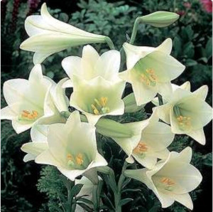

Composición del jardín
Durante la primavera veremos florecer las azucenas . los claveles
, y los humildes geranios
 , y los humildes geranios
, y los humildes geranios  , y los humildes geranios
, y los humildes geranios